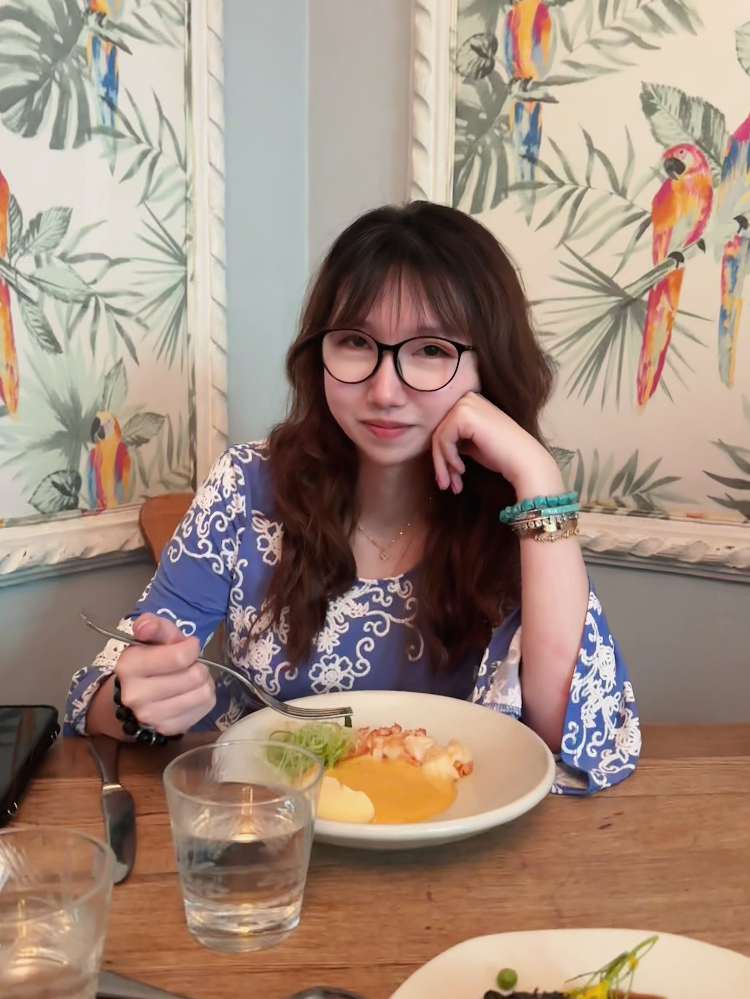

Portfolio — Chunyu Yang
Product design engineer working across hardware, safety systems, interaction design, and manufacturing. Creating tools people can trust.

B.Eng Product Design & Manufacture
University of Nottingham Ningbo China
GPA 3.4 / 4.0 · Sept 2021 – Jun 2025
Design Innovation
UC Berkeley · College of Environmental Design
2025 – Present
I'm Chunyu Yang, a product design engineer working across hardware, safety systems, interaction design, and manufacturing. My projects span AR safety eyewear, disaster communication systems, health monitoring devices, children's products, computer vision prototypes, injection moulding, and critical design theory.
I build things that work under pressure — from 2.1mm nozzle tips to 30km balloon communication networks. Each project begins with deep research and ends with a tested, working prototype or a simulation-validated production design.
Open to design collaborations, full-time roles, and research partnerships in hardware and safety technology.